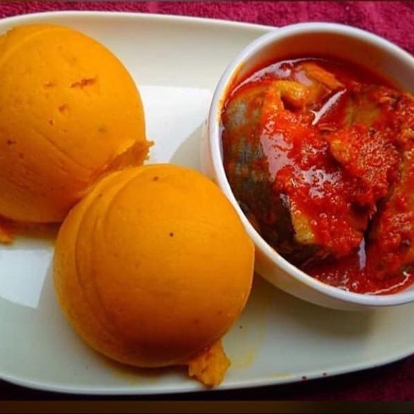

Pounded-yam-Onunu
Recipe Homepage

Description
Onunu is a classic meal amongst the Ijaws and
Kalabari in Rivers and Bayelsa State of
South-South Nigeria.
It’s made with Overripe plantain and yam
boiled and pound together, mixed with palm oil.
It is usually eaten with fresh fish sauce.
Ingredients
-
- 1 medium-sized yam
- Ripe Plantain
- tablespoon of Palm oil
- Salt to taste
For the Sauce
- Fresh Fish
- Tomato Puree and Pepper
- Seasoning
Steps
- Peel the yam, cut into small pieces, and boil.
- Peel the plantain, cut into the pieces, and add to the yam.
- Add salt when the yam and plantain are almost cooked.
- When it’s done, you start pounding
- Add a little palm oil and mix.
- Wrap in small pieces and serve with fish sauce.